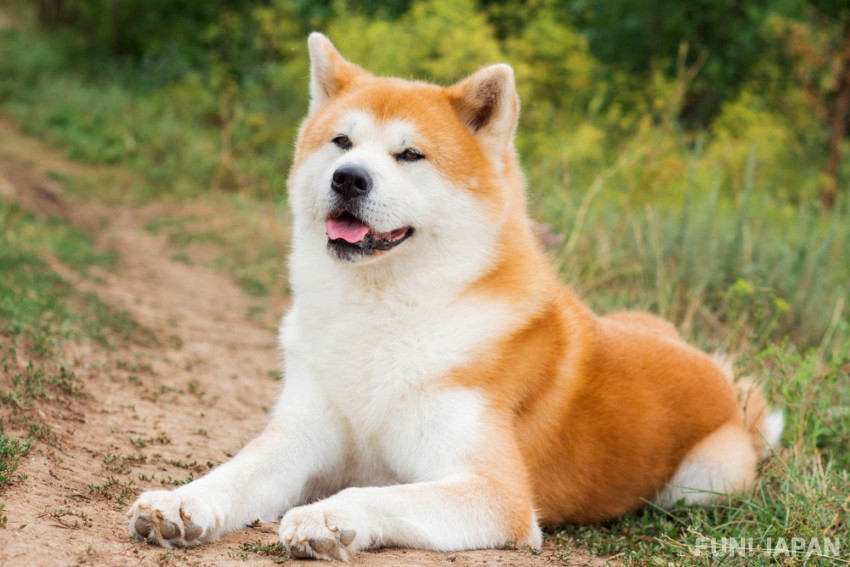
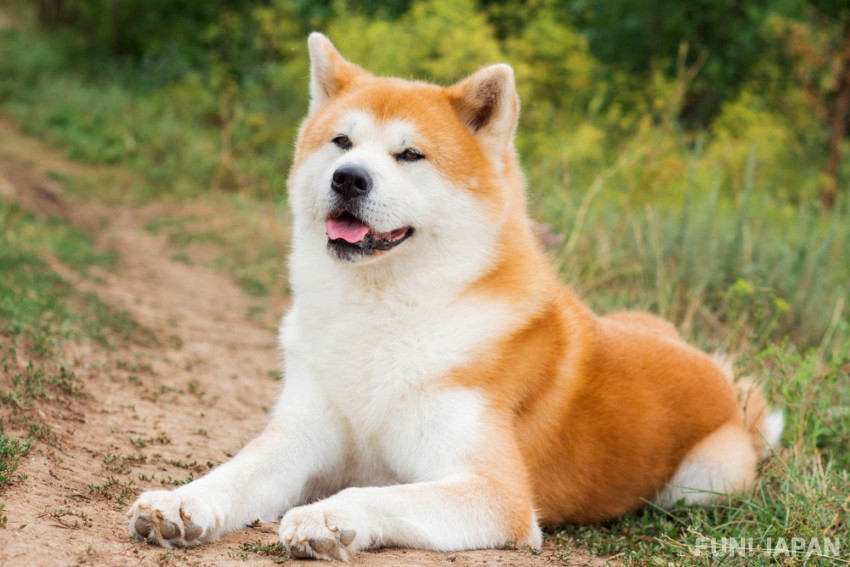

ปลาทู
ปลาทูนับเป็นปลาที่มีความสำคัญทางเศรษฐกิจเป็นอย่างยิ่ง
โดยเฉพาะในอาหารไทย มีการนำปลาทูมาปรุงเป็นอาหารมาช้านานแล้ว
ทั้งนึ่ง ทอด ต้มยำ หรือทำน้ำพริกปลาทูซึ่งใช้เนื้อปลาทูโขลกผสมรวมกับกะปิ
ในตลาดสดของไทยจะมีขายทั้งปลาทูนึ่งใส่เข่งและปลาทูสด เนื้อปลาทูมีคุณค่าทางอาหารมากมาย ทั้งกรดไลโนเลอิก
ซึ่งเป็นตัวควบคุมระดับคอเลสเทอรอล และไตรกลีเซอไรด์ในกระแสเลือด
และกรดโคโคซาเฮ็กชิโนอิก (ดีเอชเอ) ซึ่งเป็นส่วนประกอบสำคัญของเซลล์สมอง
อ่านต่อ
 
